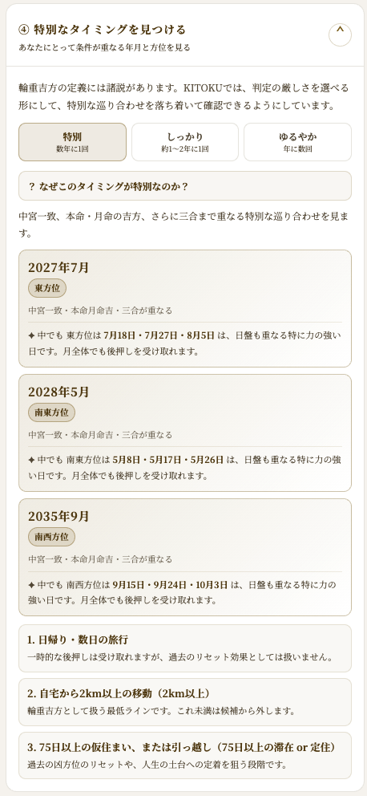
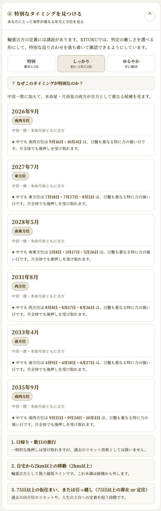
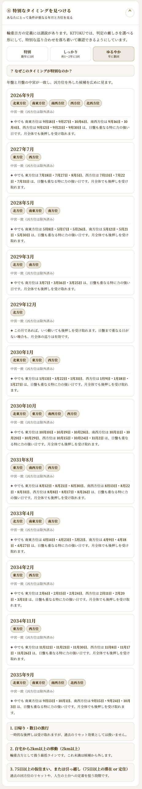

過去の失敗をリセットしたい方へ
「知らずに凶方位へ動いてしまった」。そう感じている方に向けて、輪重吉方という考え方と、KITOKUで巡り合わせを見つける方法をまとめます。
年盤と月盤が重なる、特別なタイミングを知る。
過去を責めず、これからの選択肢として見る。
2km以上の移動、75日以上の滞在、日盤まで重なる日を確認する。
11. 過去に取り返しのつかないことをしてしまった、と思っている方へ
「あの時、あの方位に引っ越してしまった」「知らずに凶方位へ移動してしまっていた」。そんな後悔を抱えている方に、まず伝えたいことがあります。
気学には、そうした過去を巻き戻すための仕組みが、ちゃんと用意されています。それが「輪重吉方（りんじゅうきっぽう）」です。
22. 輪重吉方とは何か
年盤（1年間有効な方位の流れ）と月盤（1ヶ月間有効な方位の流れ）は、通常は違う配置になっています。ですが、ごくまれに、年盤と月盤の星の配置がぴったり重なることがあります。
このタイミングで、その方位が自分にとっての吉方位である場合、後押しの力が桁違いに強くなるとされています。
23. 過去のリセットという、もう一つの働き
輪重吉方には、もう一つ大切な働きがあります。輪重吉方の方位へ、自宅から2km以上移動することで、過去に凶方位への移動で受けた影響をリセットできるとされています。
つまり、「知らずに凶方位へ引っ越してしまった」という過去があっても、輪重吉方という巡り合わせが来た時に動けば、そこから立て直せるということです。
34. 注意点: 吉方位であることが大前提
年盤と月盤が重なるタイミングは、吉の力だけでなく、凶の力も同じように強く増幅される時期でもあります。
重なった方位が、自分にとって凶方位（五黄殺・暗剣殺など）である場合は、その方位へは動かないのが基本です。輪重吉方として意味を持つのは、その方位が自分の吉方位である場合だけです。
35. 巡り合わせの見つけ方は、自分で選べる
輪重吉方の「厳しさ」には、流派や先生によって考え方の違いがあります。KITOKUは、どれか一つを正解として押し付けません。代わりに、判定の基準を3段階から選べるようにしています。
| 判定レベル | 条件 | 目安の頻度 |
|---|---|---|
| ゆるやか | 年盤と月盤の中宮が一致 | 年に数回 |
| しっかり | 本命・月命ともに吉方 | 約1〜2年に1回 |
| 特別 | 三合まで重なる | 数年に1回 |

46. 見つけた後、何をすればいいか
輪重吉方の年月・方位が分かっても、「その方向に旅行に行くだけ」では、効果は限定的です。行動の重さによって、得られる結果が変わります。
| 行動 | 得られる効果 |
|---|---|
| 日帰り・数日の旅行 | 気持ちの良い後押しは受け取れるが、過去のリセットは起きない |
| 自宅から2km以上の移動 | ここが最低ライン。これより近いと輪重吉方としては扱われない |
| 75日以上の仮住まい、または引っ越し | 過去の凶方位の影響をリセットし、人生の土台に定着させる効果が期待できる |

57. 月の中でも、特に力の強い日がある
該当する月が分かっても、「では何日に動けばいいか」までは分からない、という声にお応えして、KITOKUでは月の中でも日盤まで重なる、特に力の強い日を最大3日まで具体的に表示しています。
ピンポイントの日が出ない月もあります。その場合は「この月であれば、いつ動いても後押しを受け取れます」と表示されます。日付が出ないからといって、その月が弱いわけではありません。月全体が有効な巡り合わせです。

68. そこからどう立て直すかは、これから選べる
過去にどんな選択をしていたとしても、それはもう変えられません。でも、そこからどう立て直すかは、これから選べます。
輪重吉方は、いつか必ず巡ってくる特別な機会です。焦って探す必要はありません。準備だけ、少しずつ整えておいてください。
あなたの過去は、失敗ではなく、ただの通過点です。